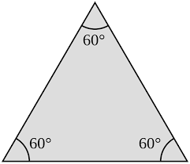

Triangle Tracker
This calculator will determine what triangle you have made depending on the integer values in the input fields.
Equilateral
An equilateral triangle has three equal sides and angles. It will always have angles of 60° in each corner.
Isosceles

An isosceles triangle can be drawn in many different ways. It can be drawn to have two equal sides and two equal angles or with two acute angles and one obtuse angle. It is easy to work out the missing angles of an isosceles triangle by looking for the angles that should be equal.
Scalene

A scalene triangle has three different angles and none of its sides are equal in length.